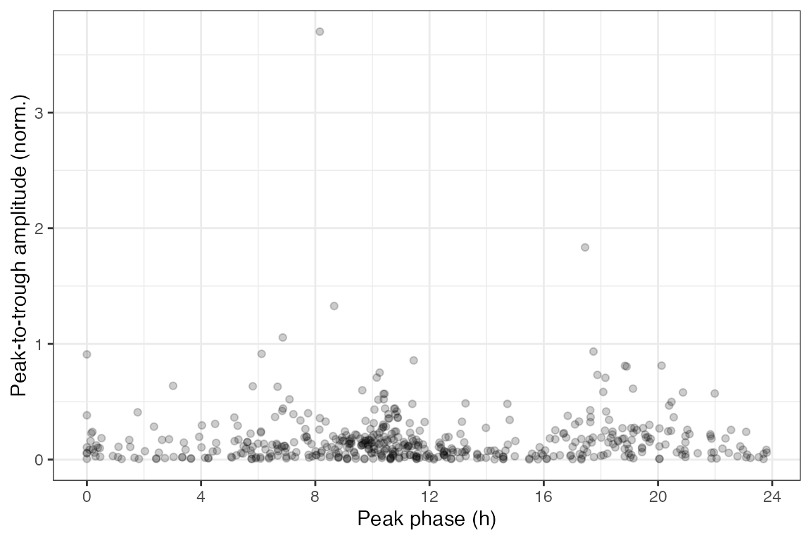
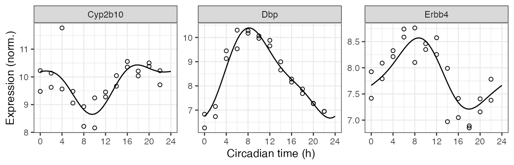

Here we show how to use limorhyde2 to quantify rhythmicity in data from one condition. The data are based on mouse liver samples from the circadian gene expression atlas in mammals (GSE54650).
library('data.table')
library('ggplot2')
library('limorhyde2')
library('qs')
doParallel::registerDoParallel()
theme_set(theme_bw())The expression data are in a matrix with one row per gene and one column per sample. The metadata are in a table with one row per sample. To save time and space, the expression data include only 2000 genes.
y = qread(system.file('extdata', 'GSE54650_liver_data.qs', package = 'limorhyde2'))
y[1:5, 1:5]
#> GSM1321182 GSM1321183 GSM1321184 GSM1321185 GSM1321186
#> 100009600 5.055931 5.199767 5.121511 5.155912 5.219873
#> 100036537 5.207434 5.096066 5.315157 5.204403 5.184410
#> 100038363 7.152352 7.220669 6.923795 7.157479 6.965567
#> 100038453 5.491910 5.348688 5.352635 5.246515 5.408168
#> 100038494 5.878479 5.748674 5.701566 5.761668 5.919767
metadata = qread(system.file('extdata', 'GSE54650_liver_metadata.qs', package = 'limorhyde2'))
metadata
#> sample time
#> 1: GSM1321182 18
#> 2: GSM1321183 20
#> 3: GSM1321184 22
#> 4: GSM1321185 24
#> 5: GSM1321186 26
#> 6: GSM1321187 28
#> 7: GSM1321188 30
#> 8: GSM1321189 32
#> 9: GSM1321190 34
#> 10: GSM1321191 36
#> 11: GSM1321192 38
#> 12: GSM1321193 40
#> 13: GSM1321194 42
#> 14: GSM1321195 44
#> 15: GSM1321196 46
#> 16: GSM1321197 48
#> 17: GSM1321198 50
#> 18: GSM1321199 52
#> 19: GSM1321200 54
#> 20: GSM1321201 56
#> 21: GSM1321202 58
#> 22: GSM1321203 60
#> 23: GSM1321204 62
#> 24: GSM1321205 64
#> sample timeThe first step is to fit a series of linear models based on periodic splines for each genomic feature, in this case each gene, using limma. getModelFit() takes several arguments besides the expression data and metadata, but here we just use the defaults. For example, the data are from one condition, so we leave condColname as NULL. Also, the expression data are from microarrays and already log-transformed, so we leave method as 'trend'.
fit = getModelFit(y, metadata)The next step is obtain posterior estimates of the model coefficients using multivariate adaptive shrinkage (mashr), which learns patterns in the data and accounts for noise in the original fits.
fit = getPosteriorFit(fit)
#> - Computing 2000 x 121 likelihood matrix.
#> - Likelihood calculations took 0.53 seconds.
#> - Fitting model with 121 mixture components.
#> - Model fitting took 0.28 seconds.
#> - Computing posterior matrices.
#> - Computation allocated took 0.17 seconds.We can now use the posterior fits to compute rhythmic statistics, i.e. properties of the curve, for each gene.
rhyStats = getRhythmStats(fit)We can examine the distributions of the statistics in various ways, such as ranking genes by peak-to-trough amplitude (no p-values necessary) or plotting peak-to-trough amplitude vs. peak phase.
rhyStats[order(-peak_trough_amp)]
#> feature peak_phase peak_value trough_phase trough_value peak_trough_amp
#> 1: 13170 8.175017 10.397552 23.100117 6.669456 3.7280960340
#> 2: 13088 17.831617 10.432282 9.556301 8.646376 1.7859059206
#> 3: 72962 1.779927 9.016032 11.810785 7.463981 1.5520506543
#> 4: 245050 19.262486 8.414388 9.820700 6.912809 1.5015790515
#> 5: 227541 3.016690 9.972169 12.452307 8.571923 1.4002458188
#> ---
#> 1996: 115489282 21.569660 3.828850 7.898733 3.825389 0.0034605389
#> 1997: 115487875 10.025290 3.959654 3.645550 3.956401 0.0032527449
#> 1998: 625963 15.797470 4.122449 8.202492 4.119277 0.0031713225
#> 1999: 14600 7.594932 12.320566 14.582262 12.317965 0.0026007985
#> 2000: 115487567 20.658223 3.796829 13.367099 3.795875 0.0009548159
#> rms_amp mean_value
#> 1: 1.2363878206 8.478881
#> 2: 0.6026551238 9.761782
#> 3: 0.5481368133 8.365345
#> 4: 0.5485035672 7.890096
#> 5: 0.4991258742 9.433554
#> ---
#> 1996: 0.0012500730 3.826594
#> 1997: 0.0010094238 3.957968
#> 1998: 0.0009664008 4.121117
#> 1999: 0.0008181870 12.318935
#> 2000: 0.0002896484 3.796254
ggplot(rhyStats) +
geom_point(aes(x = peak_phase, y = peak_trough_amp), alpha = 0.2) +
xlab('Peak phase (h)') +
ylab('Peak-to-trough amplitude (norm.)') +
scale_x_continuous(breaks = seq(0, 24, 4))
We can also compute the expected measurements for one or more genes at one or more time-points, which correspond to the fitted curves. Here we plot the posterior fits and observed expression for three of the top rhythmic genes (converting from gene id to gene symbol).
genes = data.table(id = c('13088', '13170', '13869'),
symbol = c('Cyp2b10', 'Dbp', 'Erbb4'))
measFit = getExpectedMeas(fit, times = seq(0, 24, 0.5), features = genes$id)
measFit[genes, symbol := i.symbol, on = .(feature = id)]
print(measFit, nrows = 10L)
#> time feature value symbol
#> 1: 0.0 13088 10.195665 Cyp2b10
#> 2: 0.0 13170 6.745669 Dbp
#> 3: 0.0 13869 7.663327 Erbb4
#> 4: 0.5 13088 10.206308 Cyp2b10
#> 5: 0.5 13170 6.858938 Dbp
#> ---
#> 143: 23.5 13170 6.683988 Dbp
#> 144: 23.5 13869 7.623150 Erbb4
#> 145: 24.0 13088 10.195665 Cyp2b10
#> 146: 24.0 13170 6.745669 Dbp
#> 147: 24.0 13869 7.663327 Erbb4Next we combine the observed expression data and metadata. The curves show how limorhyde2 is able to fit non-sinusoidal rhythms.
measObs = mergeMeasMeta(y, metadata, features = genes$id)
measObs[genes, symbol := i.symbol, on = .(feature = id)]
print(measObs, nrows = 10L)
#> sample time feature meas symbol
#> 1: GSM1321182 18 13088 10.209968 Cyp2b10
#> 2: GSM1321182 18 13170 7.871989 Dbp
#> 3: GSM1321182 18 13869 6.851685 Erbb4
#> 4: GSM1321183 20 13088 10.503358 Cyp2b10
#> 5: GSM1321183 20 13170 7.281691 Dbp
#> ---
#> 68: GSM1321204 62 13170 8.656560 Dbp
#> 69: GSM1321204 62 13869 6.970524 Erbb4
#> 70: GSM1321205 64 13088 10.352095 Cyp2b10
#> 71: GSM1321205 64 13170 8.157525 Dbp
#> 72: GSM1321205 64 13869 7.048457 Erbb4
ggplot() +
facet_wrap(vars(symbol), scales = 'free_y', nrow = 1) +
geom_line(aes(x = time, y = value), data = measFit) +
geom_point(aes(x = time %% 24, y = meas), shape = 21, size = 1.5,
data = measObs) +
labs(x = 'Circadian time (h)', y = 'Expression (norm.)') +
scale_x_continuous(breaks = seq(0, 24, 4))